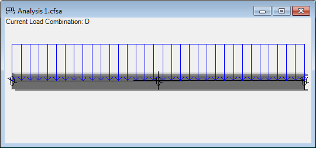

The analysis window displays a graphic of the analysis. Every open analysis has a corresponding analysis window, whether it was created as a new analysis with the Analysis Wizard, or opened from an analysis file.

The graphic contains a horizontal or vertical representation of the members, viewed isometrically. The orientation of the section for each member is as viewed from the left end of the member, or from the top for the vertical orientation. Overlapping members are shown with a slight stagger in the lines so the overlap is visible. Supports are shown as follows: X supports are horizontal lines, Y supports are vertical lines, torsional supports are circles around the member, and rotational supports are horizontal or vertical hatched walls.
Graphical representations are also given for members with braced flanges and fully braced regions. And if the analysis inputs window is currently on the Loadings tab, all the loads for that loading are also shown in the graphic.
You may use the mouse to select members and supports. Selected items are shown highlighted in the graphic. You may select any member or support simply by clicking on it. You may select multiple consecutive members or supports by clicking on one and dragging to another. A pop-up menu of edit commands is available by clicking with the right mouse button.
You may also measure the distance between two points along the members or supports. Hold the Ctrl key and click the first point. CFS will select the nearest endpoint or support, and show a point marker in the window. Then hold the Ctrl key and click the second point to display the dimension between the two points. To remove the dimension, hold the Ctrl key and click one more time.
You may also zoom and pan the display using either the mouse or the keyboard.
Here is a summary of the mouse and keyboard methods:
| Action | Mouse | Keyboard | |
| Select Members | Click, Click & Drag | ||
| Select Supports | Click, Click & Drag | ||
| Select Point | Ctrl-Click | ||
| Zoom In/Out | Ctrl-Mouse Wheel | Page Up, Page Down | |
| Pan Up/Down | Mouse Wheel | Ctrl-Up, Ctrl-Down | |
| Pan Left/Right | Shift-Mouse Wheel | Ctrl-Left, Ctrl-Right | |
| Drag | Middle-Click & Drag | ||
| Zoom All | Home or Escape | ||
| Edit Menu | Right-Click | Apps Key |